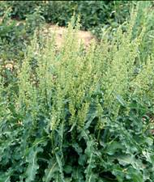

AGRO 304 :: Lecture 03 :: PROPAGATION AND DISSEMINATION OF WEED SEEDS

PROPAGATION
Propagation is the process of multiplying or increasing the number of plants of the same species and at the same time perpetuating their desirable characteristics. Plants may be propagated under two general categories: sexual and asexual propagation.
Reproduction by seed
Reproduction by seed is called sexual reproduction. It requires pollination and fertilization of an egg which results in seed that is capable of producing a new plant. Seed production varies greatly among and within weed species in part due to environmental variability between years, competition from neighboring plants, and genetic variability. For example, while Canada thistle has been observed to produce as few as 680 seeds per plant, Curly dock often produces more than 30,000 seeds per plant.
Canada thistle
|

Vegetative reproduction
In vegetative (asexual) reproduction, a new plant develops from a vegetative organ such as a stem, root, or leaf. Several modifications of these organs are common in perennial weeds, such as underground stems (rhizomes), above-ground stems (stolons), bulbs, corms, and tubers. Although vegetative structures generally do not survive as long in the soil as do seeds, very small structures can result in a new plant. Canada thistle, for example, can produce a new plant from as small as a 1/4-inch section of root.
Vegetative reproduction can be as prolific as seed production. Yellow nut-sedge (Cyperus esculentus) has been reported to produce more than 1,900 new plants and more than 6,800 tubers in 1 year.
Cyperus esculentus - tubers
DISSEMINATION / DISPERSAL
A plant seed
is a unique genetic entity, a biological individual. However, a seed is in a diapause state, an essentially dormant condition, awaiting the ecological conditions that will allow it to grow into an adult plant, and produce its own seeds. Seeds must therefore germinate in a safe place, and then establish themselves as a young seedling, develop into a juvenile plant, and finally become a sexually mature adult that can pass its genetic material on to the next generation.
The chances of a seed developing are generally enhanced if there is a mechanism for dispersing to an appropriate habitat some distance from the parent plant. The reason for dispersal is that closely related organisms have similar ecological requirements. Obviously, competition with the parent plant will be greatly reduced if its seeds have a mechanism to disperse some distance away. Their ability to spread and remain viable in the soil for years makes eradication nearly impossible.
Seeds have no way to move on their own, but they are excellent travelers. Plants have evolved various mechanisms that disperse their seeds effectively. Many species of plants have seeds with anatomical structures that make them very buoyant, so they can be dispersed over great distances by the winds. In the absence of proper means of their dispersal, weeds could not have moved from one country to another. An effective dispersal of weed seeds and fruits requires two essentials a successful dispersing agent and an effective adaptation to the new environment.
There are two ways of looking at weed seed dispersal
- the expanding range and increasing population size of an invading weed species into a new area
- the part of the process by which an established and stabilized weed species in an area
maintains itself within that area
Dissemenation includes two separate processes. They are Dispersal (leaving mother plant) and Post-dispersal events (subsequent movement).
Dispersal of seed occurs in 4 dimensions viz.
1. Length and 2. Width: Land/habitat/soil surface area phenomena
3. Height (soil depth, in the air)
4. Time: shatters immediately after ripening (or) need harvesting activity to release seed
Common weed dispersal agents are Wind, Water, Animals, Human, Machinery, etc.
(a) Wind
Many seeds are well adapted to wind travel. Cottony coverings and parachute-like structures allow seeds to float with the wind. Examples of wind-dispersed seeds include common milkweed (Asclepias syriaca), common dandelion, Canada thistle, and perennial sowthistle (Sonchus arvensis). Weed seeds and fruits that disseminate through wind possess special organs to keep them afloat. Such organs are
1. Pappus – It is a parachute like modification of persistent calyx into hairs.
Eg. Asteraceae family weeds - Tridax procumbens
Tridax procumbens |
|
2. Comose - Some weed seeds are covered with hairs, partially or fully Eg. Calotropis sp.
3. Feathery, persistent styles - Styles are persistent and feathery Eg. Anemone sp.
|
4. Baloon - Modified papery calyx that encloses the fruits loosely along with entrapped air. Eg. Physalis minima
5. Wings - One or more appendages that act as wings. Eg. Acer macrophyllum
Factors that influence wind dispersal
- seed weight
- seed shape
- structures (wings or pappus)
- height of release
- wind speed and turbulence
(b) Water
Aquatic weeds disperse largely through water. They may drift either as whole plants, plant fragments or as seeds with the water currents. Terrestrial weed seeds also disperse through irrigation and drainage water.Weed seed often moves with surface water runoff into irrigation water and ponds, where it is carried to other fields. Weeds growing in ditch banks along irrigation canals and ponds are the major source of weed seed contamination of irrigation water.
Weed seed often remains viable in water for several years, creating a "floating seedbank" and allowing weeds to disperse over large areas in moving water. Field bindweed seed, for example, remains over 50 percent viable after being submerged in water for more than 4 years. Some seeds have special adaptations that aid in water travel. The seedpod of curly dock, for example, is equipped with pontoons that carry the floating seed.
Curly dock
 Plant |
Seed |
Mature seed |
(c) Animals
Several weed species produce seeds with barbs, hooks, spines, and rasps that cling to the fur of animals or to clothing and then can be dispersed long distances. Farm animals carry weed seeds and fruits on their skin, hair and hooves. This is aided by special appendages such as Hooks (Xanthium strumarium), Stiff hairs (Cenchrus spp), Sharp spines (Tribulus terrestris) and Scarious bracts (Achyranthus aspera). Even ants carry a huge number of weed seeds. Donkeys eat Prosophis julifera pods.
|
|
|
Weed seed often is ingested and passed through the digestive tracts of animals. Animal droppings provide an ideal nutrient and moisture environment for weed germination. While only a small percentage of the seed remains viable after exposure to an animal's digestive enzymes. The ingested weed seeds are passed in viable form with animal excreta (0.2% in chicks, 9.6% in calves, 8.7% in horses and 6.4% in sheep), which is dropped wherever the animal moves. This mechanism of weed dispersal in called endozoochory. Eg., Lantana seeds by birds. Loranthus seeds stick on beaks of birds. Viable weed seeds are present in the dung of farm animals, which forms part of the FYM. Besides, addition of mature weeds to compost pit as farm waste also act as source.
(d) Dispersal by Man
Man disperses numerous weed seeds and fruits with raw agricultural produce. Weeds mature at the same time and height along with crop, due to their similar size and shape as that of crop seed man unknowingly harvest the weeds also, and aids in dispersal of weed seeds. Such weeds are called “Satellite weeds” Eg. Avena fatua, Phalaris minor.
|
|
(e) Dispersal by machinery
Weed seeds often are dispersed by tillage and harvesting equipment. Seeds move from field to field on the soil that sticks to tractor tires, and vegetative structures often travel on tillage and cultivation equipment and latter dropping them in other fields to start new infestation. Disc-type cultivation equipment is less likely to drag vegetative plant parts than are shovels or sweeps.
(f) Intercontinental movement of weeds:
Introduction of weeds from one continent to another through crop seed, feed stock, packing material and nursery stock. Eg. Parthenium hysterophorus
(g) Crop mimicry dispersal
Weed seed adaptations to look like crop seed: plant body or seed same size, shape, and morphology as crop. Eg: barnyard grass biotype looking like rice escapes hand weeding and is dispersed with rice, nightshade fruit ("berries") same size, shape as dry beans, harvested and dispersed with beans.
(h) As admixtures with crop seed, animal feed, hay and straw.
Weeds probably are spread more commonly during the seeding of a new crop or in animal feed and bedding than by any other method. Seed labels often indicate a tiny percentage of weed seed, but consider this example. If a legume seed contains 0.001 percent dodder (a parasitic annual; Cuscuta campestris) seed by weight, there will be eight dodder seeds per 2 kg of legume seed. If the legume seed is sown in a field despite an extremely low dodder seed percentage by weight, the small size of the seed, combined with rapid early-season growth, could result in an infested legume field within a single season.

| Download this lecture as PDF here |